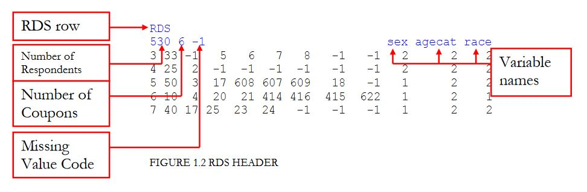
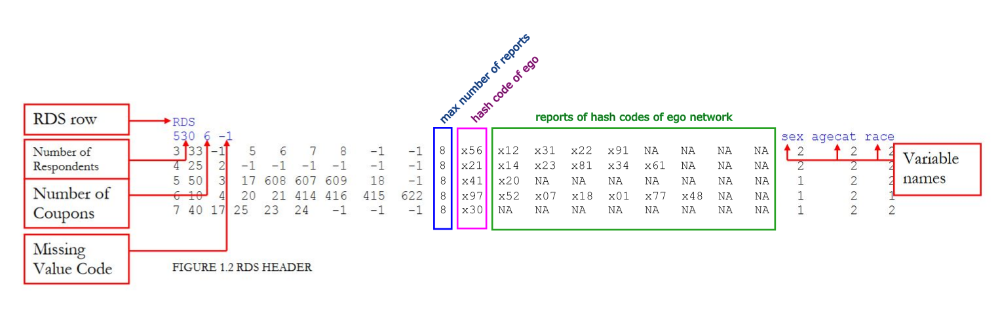

This website provides tools to generate population size estimates from RDS and uniform random samples.
The software accepts an augmented RDSAT file format as input. The original RDSAT file format is described
here.

This format is extended as follows:
